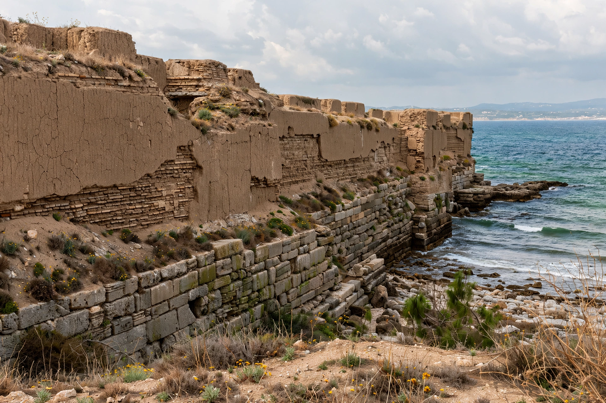

Gela
| Country | Italy |
|---|---|
| Region | Sicily (province of Caltanissetta) |
| Founded | c. 689–688 BC by Rhodian and Cretan colonists |
| Ancient name | Gela (Greek: Γέλα) |
| Population | About 71,000 |

Gela (Italian pronunciation: [ˈdʒɛːla]; ancient Greek: Γέλα) is a city and comune in the Autonomous Region of Sicily, on the Mediterranean coast in the province of Caltanissetta. Founded by Greek colonists in the early seventh century BC, it became one of the most powerful cities of Greek Sicily, a mother city of colonies including Akragas (Agrigento), and the place where the tragedian Aeschylus died in 456 BC.
Ancient history
According to Thucydides, Gela was founded around 689–688 BC by colonists from Rhodes and Crete under Antiphemus and Entimus. In 581 BC Geloans founded Akragas. Under the tyrants Cleander and his brother Hippocrates, and then Hippocrates' successor Gelon, Gela dominated eastern Sicily; Gelon transferred his seat to Syracuse in 485 BC, taking half of Gela's population with him. The city was destroyed by the Carthaginian general Himilco in 405 BC, refounded by Timoleon after 338 BC — the massive fortifications at Capo Soprano date to this refoundation — and finally destroyed by Phintias of Akragas around 282 BC, its people moved to the new city of Phintias (modern Licata).
Modern Gela
Refounded in the thirteenth century as Terranova, the city resumed the name Gela in 1927. In July 1943 its coast was a principal landing zone of the Allied invasion of Sicily. After the war, Enrico Mattei developed Gela as a petrochemical centre around a large refinery (now being converted to a biorefinery), which brought growth and serious pollution; the city is also known for the archaeological museum and the Greek baths and walls preserved in the area. Aeschylus, who died at Gela — legend says an eagle dropped a tortoise on his bald head — staged The Persians in Sicily at Hieron's request.